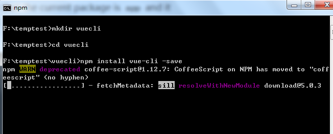
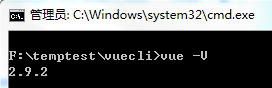
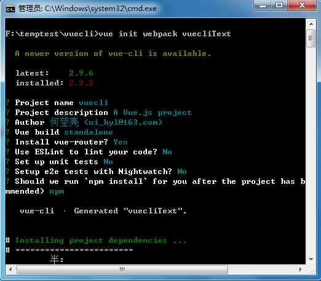
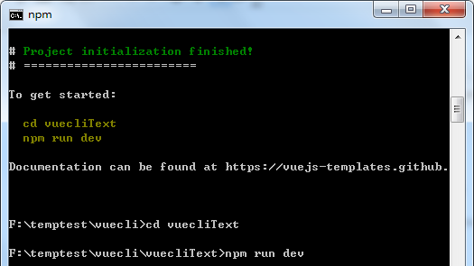
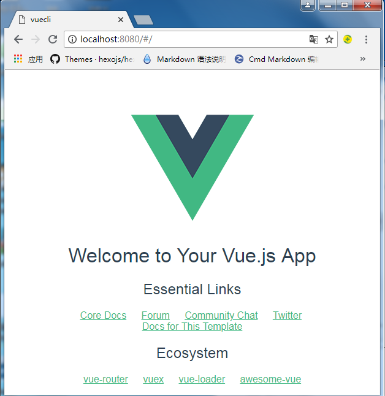

准备
环境
(node.js环境)http://nodejs.cn/download/、npm(node安装包会包含)
相关文档
NPM文档：https://www.npmjs.com.cn/
安装
shift+鼠标右键选择在此处打开命令窗口进入DOC命令窗口，依次键入如下命令
1 | mkdir vuecli |
1 | cd vuecli |
1 | npm install vue-cli -save |
mkdir vuecli 创建一个名为vuecli的文件夹
cd vuecli 打开进入vuecli文件夹
npm install vue-cli -save 本地安装vue-cli

检测是否安装成功
vue -V 检测vue的版本

初始化一个项目
运行命令
1 | vue init webpack vuecliText |
vue init webpack vuecliText 初始化一个使用webpack为模板的名为vuecliText的项目

运行
依次运行命令
1 | cd vuecliText |
1 | npm run dev |

等待完成后打开浏览器输入http://localhost:8080

何莹亮原创技术文章，转载请注明出处：https://heyingliang.github.io/share/2018/09/30/vue-cli/